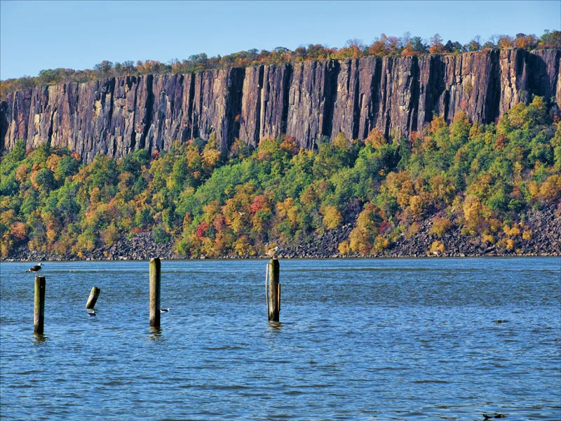
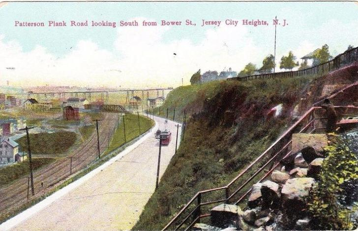
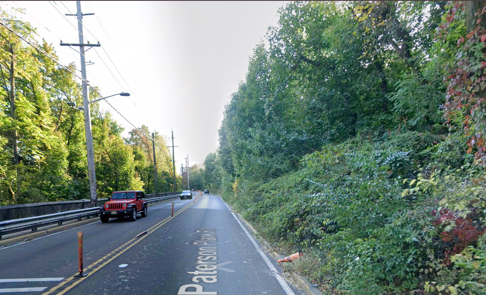
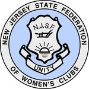

As Pangaea broke apart, magma rose and cooled forming a sill of hard diabase beneath overlying layers of softer rock.
The glaciers of the Ice Age helped shape the eastern edge of the sill into the cliffs we see today, scouring away the loose rock around them.
The Lenape people who inhabited the area called them Wee-Awk-En meaning "Rocks that look like trees."
Colonists started calling the cliffs The Palisades because they closely resembled the defensive wooden stake walls, which they called palisades, built around forts at the time.


Early 1900s

Today
The Palisades were nearly destroyed by quarrying in the late 1800s. Large sections of the cliffs were being blasted for construction stone, prompting widespread concern that the iconic landscape would be lost.
A grassroots conservation campaign saved the cliffs. The New Jersey State Federation of Women's Clubs spearheaded a public preservation movement that resulted in the creation of the Palisades Interstate Park Commission in 1900.
The Palisades became a pioneering conservation success. With support from New Jersey, New York, and donors such as financier J. P. Morgan, quarry lands were acquired and protected, creating America's first major bi-state park system.
Conservation continues today in Bergen and Rockland Counties. The Palisades Interstate Park Commission still manages the land as well as the Palisades Nature Association which manages the Greenbrook Sanctuary.

Today, the Lower Palisades face new threats. Learn about the area and what we can do.
Explore the Area →